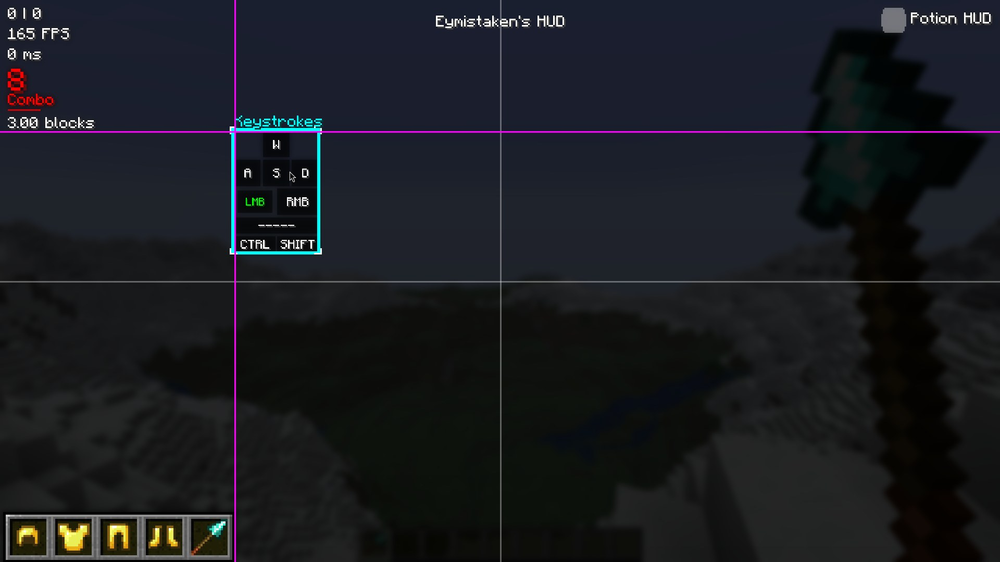

Basics
The HUD editor
Press Right Shift in game. The editor draws over your live HUD, so what you drag is the real thing at its real size.

Mouse and keyboard
| Left-click and drag | Move a module, or a single armor slot once you have ungrouped them. It snaps to other modules' edges and centers, then to the grid if the grid is on. |
|---|---|
| Hold Shift while dragging | Turns snapping off for that drag: free placement, pixel for pixel. |
| Scroll wheel | Scales the module under the cursor by 5% per notch, from 50% to 300%. This saves immediately, since there is no drag to release. |
| Drag on empty space | Marquee select. Everything inside the box is selected. |
| ← ↑ → ↓ | Nudge the selection one pixel. |
| Right-click a module | Its own context menu. Text settings in it open a field that works like any other: arrow keys and clicks move the cursor, a drag, Shift or Ctrl A selects, and Ctrl C, Ctrl X and Ctrl V copy, cut and paste. Enter saves and Esc cancels. |
| Right-click empty space | The global menu. |
Align and distribute
Select two or more elements and a toolbar appears at the top of the screen. Hover any button to see what it does.
L CX R | Align left, match center on X, align right. |
|---|---|
T CY B | Align top, match center on Y, align bottom. |
DX DY | Distribute horizontally or vertically, with equal gaps between elements. Needs three or more; the outermost two stay put. |
The global menu
Right-click anywhere empty. Nine rows:
| Settings… | Opens the full settings screen. |
|---|---|
| Prevent Overlap | Toggles collision handling for the whole HUD. |
| Grid | Left-click toggles the grid. Right-click cycles its size through 4, 8, 16 and 32 pixels. Lining up with another module still wins over the grid. |
| Save Config | Saves everything as a preset called Config 1, Config 2 and so on, taking the first free number. |
| Configs | Hover for your saved presets. Left-click a name to load it, the bin icon to delete it, right-click to rename it. Heading for the list on a diagonal keeps it open even when the cursor crosses the rows below. |
| Server Configs | Hover for your per-server configs. The title row switches the whole feature on and off. |
| Export Code | Copies your whole HUD to the clipboard as a share code. The row reads Copied! for a moment. |
| Import Code | Opens a text box you can paste into with Ctrl V. Your current config is backed up to a preset first. |
| Reset HUD | Sends every module back to its default anchor, offset and scale. Colors and behavior are left alone. |
Every module menu starts and ends the same way. It starts with Reset Position and ends with Open Settings…, which jumps straight to that module's page in the settings screen.